用法：A型题点选项即判；X型题先多选、再点【判卷】；答完自动展开解析。刷完本课再过一遍底部【本课速记卡】，效果最好。
一、概述与血管反应7 题
A型·单选Q1P1 · 概述
炎症最常见的损伤因子是
答案与解析
答案：A
炎症是对损伤因子作出的以防御为主的反应；生物性因子最常见。
📖 讲义定位：P1 · 概述
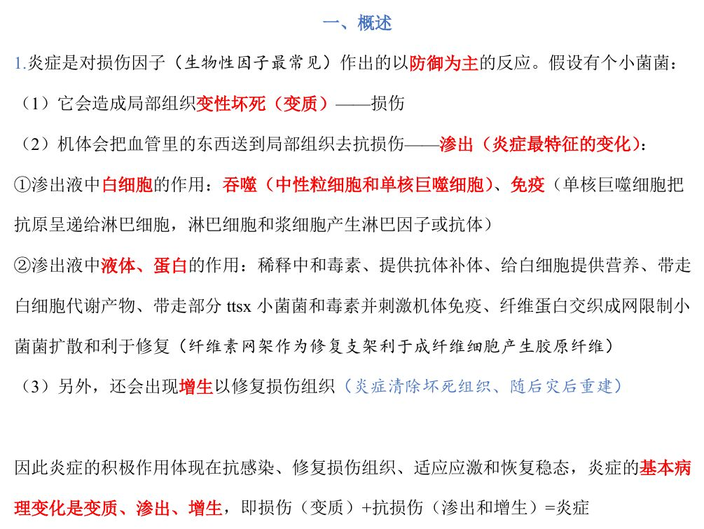
📷 讲义原图 · P1 · 概述
A型·单选Q2P1 · 概述
炎症最特征的变化是
答案与解析
答案：B
炎症基本病理变化＝变质、渗出、增生；渗出是炎症最特征的变化（中心是血管反应）。
📖 讲义定位：P1 · 概述
A型·单选Q3P1 · 概述
炎症渗出液中，发挥吞噬作用的细胞主要是
答案与解析
答案：C
渗出液中白细胞作用：吞噬（中性粒细胞和单核-巨噬细胞）、免疫（单核-巨噬细胞呈递抗原→淋巴细胞和浆细胞产生淋巴因子或抗体）。
📖 讲义定位：P1 · 概述
A型·单选Q4P1 · 概述
炎症时纤维蛋白（纤维素）渗出的意义是
答案与解析
答案：D
液体和蛋白渗出的作用：稀释中和毒素、提供抗体补体、给白细胞提供营养、带走代谢产物、带走部分病原和毒素并刺激免疫；纤维蛋白交织成网限制扩散、利于修复。
📖 讲义定位：P1 · 概述
A型·单选Q5P3 · 血管通透性
严重烧伤时，导致血管通透性增加的主要机制是
答案与解析
答案：B
烧伤时血管通透性增加机制：①主要机制为直接损伤内皮细胞（变性坏死脱落、基底膜受损）②白细胞介导的内皮细胞损伤③内皮细胞收缩。
📖 讲义定位：P3 · 血管通透性
A型·单选Q6P3 · 注意
白细胞从血管内游出进入组织的方式是
答案与解析
答案：D
血管通透性增加是液体和蛋白渗出的主要原因，而不是白细胞渗出的主要原因——白细胞以阿米巴运动主动游出（红细胞则被动漏出）。
📖 讲义定位：P3 · 注意
X型·多选Q7P3 · 血管通透性
血管通透性增加的机制包括
答案与解析
答案：ABCD
四项均属血管通透性增加的机制；其中内皮细胞收缩、穿胞增强累及细静脉（毛细血管后小静脉），内皮细胞损伤累及全部微循环。
📖 讲义定位：P3 · 血管通透性
二、表现与炎症类型9 题
A型·单选Q8P3 · 表现
炎症局部『肿』的主要原因是
答案与解析
答案：A
炎症局部表现：红（血管扩张充血）、肿（炎性渗出物）、热、痛（渗出物压迫和炎症介质刺激）、功能障碍。
📖 讲义定位：P3 · 表现
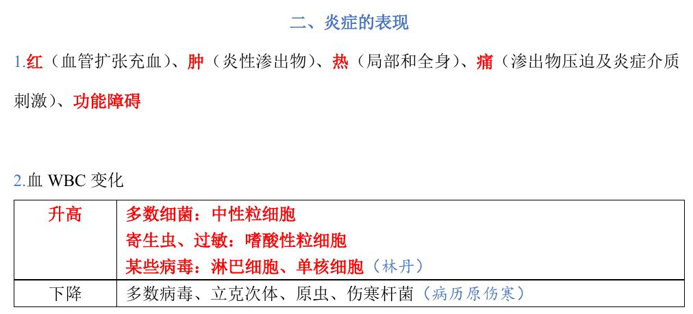
📷 讲义原图 · P3 · 表现
A型·单选Q9P3 · WBC 变化
寄生虫感染和过敏反应时，外周血中升高最明显的是
答案与解析
答案：C
血 WBC 变化：升高——多数细菌（中性粒）、寄生虫和过敏（嗜酸）、某些病毒（淋巴/单核）；下降——多数病毒、立克次体、原虫、伤寒杆菌。
📖 讲义定位：P3 · WBC 变化
A型·单选Q10P4 · 变质性炎
属于变质性炎的疾病是
答案与解析
答案：B
变质性炎（『yi 巴毒心肝』）：乙脑、阿米巴、中毒性心肌炎、病毒性肝炎。
📖 讲义定位：P4 · 变质性炎
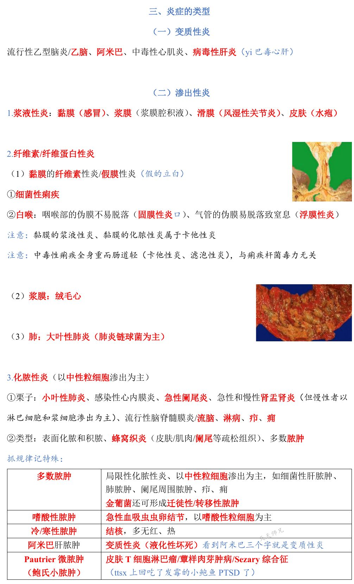
📷 讲义原图 · P4 · 变质性炎
A型·单选Q11P4 · 渗出性炎
浆液性炎的好发部位不包括
答案与解析
答案：D
浆液性炎好发于黏膜（感冒）、浆膜（浆膜腔积液）、滑膜（风湿性关节炎）、皮肤（水疱）；脑实质不属于其好发部位（D 对）。
📖 讲义定位：P4 · 渗出性炎
A型·单选Q12P4 · 纤维素性炎
伪膜性炎（假膜性炎）的本质是
答案与解析
答案：C
假膜性炎＝黏膜的纤维素性炎（假膜由纤维素、坏死组织等构成）；典型：细菌性痢疾、白喉。
📖 讲义定位：P4 · 纤维素性炎
A型·单选Q13P4 · 纤维素性炎
关于白喉假膜，下列叙述正确的是
答案与解析
答案：A
白喉：咽喉部伪膜不易脱落（固膜性炎）、气管伪膜易脱落致窒息（浮膜性炎）。
📖 讲义定位：P4 · 纤维素性炎
A型·单选Q14P4 · 纤维素性炎
能引起绒毛心的原发疾病是
答案与解析
答案：D
绒毛心＝纤维素性（纤维蛋白性）心包炎的典型表现；大量纤维素不能被溶解吸收→缩窄性心包炎。
📖 讲义定位：P4 · 纤维素性炎
A型·单选Q15P4 · 化脓性炎
蜂窝织炎的特点不包括
答案与解析
答案：C
蜂窝织炎：发生于皮肤、肌肉、阑尾等疏松组织的弥漫性化脓性炎（以中性粒细胞渗出为主）；『多形成局限性脓肿』是多数脓肿的特点，不属于蜂窝织炎（C 对）。
📖 讲义定位：P4 · 化脓性炎
X型·多选Q16P5 · 出血性炎
属于出血性炎的疾病有
答案与解析
答案：ABCD
出血性炎举例：钩端螺旋体病、炭疽、鼠疫、流行性出血热（『沟里的黑老鼠在出血』）。
📖 讲义定位：P5 · 出血性炎
三、增生性炎与肉芽肿8 题
A型·单选Q17P5 · 增生性炎
非特异性增生性炎（多为慢性）浸润的细胞主要是
答案与解析
答案：A
非特异性增生性炎（『淋浆巨』）：淋巴细胞、浆细胞、单核-巨噬细胞；栗子：炎性息肉、炎性假瘤、类风湿、急性和慢性肾小球肾炎。
📖 讲义定位：P5 · 增生性炎
A型·单选Q18P5 · 增生性炎
子宫颈息肉的病变性质是
答案与解析
答案：B
炎性息肉（鼻息肉、子宫颈息肉）属于增生性炎（炎性病变），不是肿瘤。
📖 讲义定位：P5 · 增生性炎
A型·单选Q19P5 · 肉芽肿
肉芽肿的定义是
答案与解析
答案：D
肉芽肿＝炎症（增生性炎），增生的细胞是单核-巨噬细胞，形成结节状病灶。
📖 讲义定位：P5 · 肉芽肿
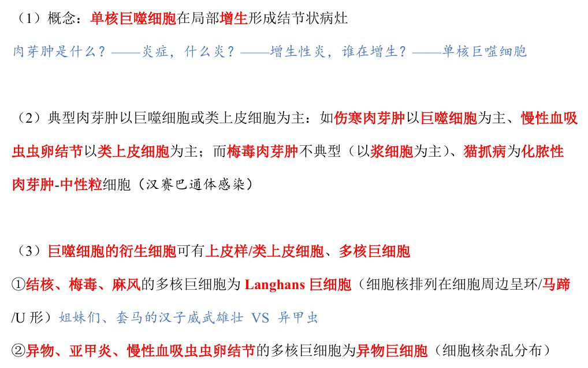
📷 讲义原图 · P5 · 肉芽肿
A型·单选Q20P5 · 肉芽肿
典型肉芽肿的构成细胞以巨噬细胞或类上皮细胞为主，下列对应正确的是
答案与解析
答案：C
伤寒肉芽肿以巨噬细胞（伤寒细胞）为主、慢性虫卵结节以类上皮细胞为主；梅毒肉芽肿不典型（以浆细胞为主）；猫抓病为化脓性肉芽肿——中性粒细胞（汉赛巴通体感染）。
📖 讲义定位：P5 · 肉芽肿
A型·单选Q21P5 · 肉芽肿
下列肉芽肿中，多核巨细胞为 Langhans（朗汉斯）巨细胞的是
答案与解析
答案：A
结核、梅毒、麻风的多核巨细胞为 Langhans 巨细胞（核排列在细胞周边呈环/马蹄形）；异物（缝线/石棉）、亚甲炎、慢性虫卵结节为异物巨细胞（核杂乱分布）。
📖 讲义定位：P5 · 肉芽肿
X型·多选Q22P6 · 肉芽肿
属于肉芽肿性炎（病变）的有
答案与解析
答案：BCD
A 错：新月体性肾小球肾炎不是肉芽肿性炎。肉芽肿栗子：异物、血吸虫虫卵、梅毒Ⅲ期、麻风、风湿病、结核、结节病、亚甲炎、伤寒、特发性巨细胞性心肌炎、真菌、猫抓病、免疫反应性心肌炎、克罗恩病。
📖 讲义定位：P6 · 肉芽肿
A型·单选Q23P5 · 肉芽肿
巨噬细胞的衍生细胞包括
答案与解析
答案：B
巨噬细胞的衍生细胞：上皮样/类上皮细胞、多核巨细胞（Langhans 或异物巨细胞）。
📖 讲义定位：P5 · 肉芽肿
X型·多选Q24P6 · 肉芽肿
来源于单核-巨噬细胞系统的细胞有
答案与解析
答案：ABCD
四项均来源于单核-巨噬细胞系统（心衰细胞、伤寒细胞、小胶质细胞、Langhans 巨细胞）。
📖 讲义定位：P6 · 肉芽肿
四、渗出液与白细胞渗出6 题
A型·单选Q25P6 · 渗出液
炎症渗出液的特点不包括
答案与解析
答案：B
渗出液：比重＞1.018、蛋白＞30、细胞数多、混浊、易自凝；比重＜1.018 是漏出液的特点（B 对）。
📖 讲义定位：P6 · 渗出液
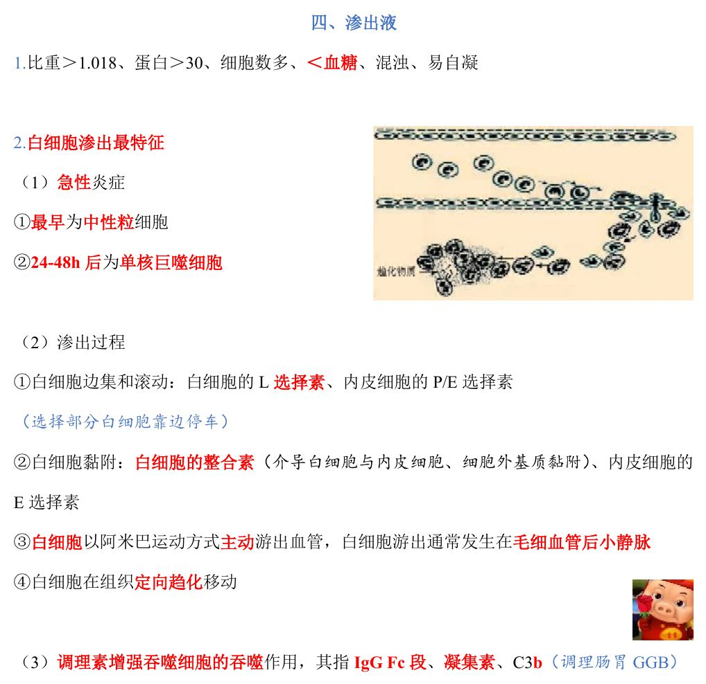
📷 讲义原图 · P6 · 渗出液
A型·单选Q26P6 · 白细胞渗出
急性炎症早期（最早）渗出的白细胞是
答案与解析
答案：A
急性炎症：最早为中性粒细胞，24-48 小时后为单核-巨噬细胞。
📖 讲义定位：P6 · 白细胞渗出
A型·单选Q27P6 · 白细胞渗出
炎症时白细胞游出血管，通常发生的部位是
答案与解析
答案：C
白细胞以阿米巴运动主动游出血管，通常发生在毛细血管后小静脉。
📖 讲义定位：P6 · 白细胞渗出
A型·单选Q28P6 · 白细胞渗出
白细胞边集和滚动过程主要依靠
答案与解析
答案：D
滚动：白细胞 L 选择素＋内皮 P/E 选择素（『选择部分白细胞靠边停车』）；黏附：白细胞整合素＋内皮 E 选择素。
📖 讲义定位：P6 · 白细胞渗出
A型·单选Q29P6 · 白细胞渗出
炎症细胞自血管内游出后，在组织内做定向运动的现象称为
答案与解析
答案：C
趋化作用：白细胞在组织内定向移动（趋化因子如 TNF、LTB4、C3a、C5a、IL-8、IL-1）。
📖 讲义定位：P6 · 白细胞渗出
A型·单选Q30P6 · 白细胞渗出
能增强吞噬细胞吞噬作用的调理素包括
答案与解析
答案：B
调理素（『调理肠胃 GGB』）：IgG Fc 段、凝集素、C3b。
📖 讲义定位：P6 · 白细胞渗出
五、炎症介质4 题
A型·单选Q31P7 · 炎症介质
下列炎症介质中，可引起发热的是
答案与解析
答案：D
发热介质：PG、IL-1、TNF（『PG one 惹老总』）；缓激肽致疼痛、IL-8 为趋化因子、NO 参与血管扩张和组织损伤。
📖 讲义定位：P7 · 炎症介质
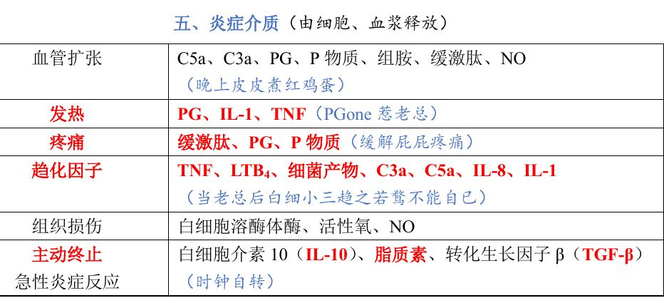
📷 讲义原图 · P7 · 炎症介质
A型·单选Q32P7 · 炎症介质
下列属于趋化因子的是
答案与解析
答案：A
趋化因子：TNF、LTB4、细菌产物、C3a、C5a、IL-8、IL-1；组胺/缓激肽致血管扩张和疼痛；IL-10、TGF-β 主动终止炎症；溶酶体酶、活性氧、NO 造成组织损伤。
📖 讲义定位：P7 · 炎症介质
X型·多选Q33P7 · 炎症介质
炎症介质的作用包括
答案与解析
答案：ABD
C 错：炎症介质增高血管通透性（内皮收缩、损伤等），而不是降低。
📖 讲义定位：P7 · 炎症介质
A型·单选Q34P7 · 炎症介质
急性炎症时引起血管扩张的介质不包括
答案与解析
答案：D
血管扩张介质：C5a、C3a、PG、P 物质、组胺、缓激肽、NO；IL-10 属于主动终止炎症的介质（D 对）。
📖 讲义定位：P7 · 炎症介质
本课速记卡
概述与血管反应
- 炎症＝损伤（变质）＋抗损伤（渗出＋增生）；最特征变化＝渗出；中心＝血管反应
- 渗出液作用：稀释中和毒素、抗体补体、营养白细胞、带走代谢产物、纤维素网限制扩散并作修复支架
- 通透性增加机制：内皮收缩（细静脉）、穿胞增强、内皮损伤（全微循环）、新生毛细血管；烧伤主要＝内皮直接损伤
- 白细胞主动阿米巴游出（红细胞被动漏出）
渗出性炎 4 类
- 浆液性炎：黏膜（感冒）、浆膜、滑膜（风湿）、皮肤（水疱）
- 纤维素性炎：假膜性炎（菌痢、白喉——咽喉固膜、气管浮膜）、绒毛心、大叶性肺炎
- 化脓性炎（中性粒）：小叶性肺炎、急性阑尾炎、流脑、淋病、疖痈；蜂窝织炎＝疏松组织弥漫性
- 出血性炎：钩体病、炭疽、鼠疫、流行性出血热
肉芽肿（专题）
- 定义：单核-巨噬细胞局部增生形成的结节状病灶（增生性炎）
- 典型：伤寒（巨噬细胞）／慢性虫卵结节（类上皮）；不典型：梅毒（浆细胞）、猫抓病（中性粒）
- Langhans 巨细胞：结核、梅毒、麻风；异物巨细胞：缝线/石棉、亚甲炎、慢性虫卵结节
- 栗子（没妈的疯姐姐压伤了矩阵猫伊恩）：异物、虫卵、梅毒Ⅲ、麻风、风湿、结核、结节病、亚甲炎、伤寒、特发性巨细胞性心肌炎、真菌、猫抓病、免疫反应性心肌炎、克罗恩病
白细胞与介质
- 急性炎症：中性粒最早→24-48h 后单核巨噬；游出部位＝毛细血管后小静脉
- 滚动（选择素）→黏附（整合素）→游出→趋化；调理素：IgG Fc、凝集素、C3b
- 介质：血管扩张（组胺等）、发热（PG/IL-1/TNF）、疼痛（缓激肽等）、趋化（IL-8/C3a/C5a）、损伤（酶/活性氧）、终止（IL-10/TGF-β）
📚 网站题库（导入）8 组 · 24 题
说明：本部分为外部题库导入（来源：「西综题库」网站 · 病理学），题干、选项与答案保留原样；标注「教师补充」的答案未经讲义逐项复核。做题方式：点字母选择（多选后点【判卷】；答案可点开「答案与出处」查看）。
炎症的基本类型B型题
A 流行性乙型脑炎/乙脑
B 黏膜（感冒）
C 阿米巴
D 浆膜（浆膜腔积液）
E 中毒性心肌炎
F 滑膜（风湿性关节炎）
G 细菌性痢疾
H 病毒性肝炎
I 小叶性肺炎
J 皮肤（水疱）
K 感染性心内膜炎
L 钩端螺旋体病
M 炎性息肉，如鼻息肉、子宫颈息肉
N 白喉
O 急性阑尾炎
P 绒毛心
Q 急性和慢性肾盂肾炎（慢性者以淋巴细胞和浆细胞渗出为主）
R 急性和慢性肾小球肾炎
S 大叶性肺炎（肺炎链球菌为主）
T 炭疽
U 流行性脑脊髓膜炎/流脑
V 鼠疫
W 淋病
X 炎性假瘤，如肺炎性假瘤可见肺泡上皮细胞、血管、纤维组织增生及慢性炎细胞浸润
Z 疖、痈
① 类风湿
② 流行性出血热
网站题W1第25讲 · 第4页
变质性炎
答案与出处
答案：ACEH
📖 第25讲 · 第4页
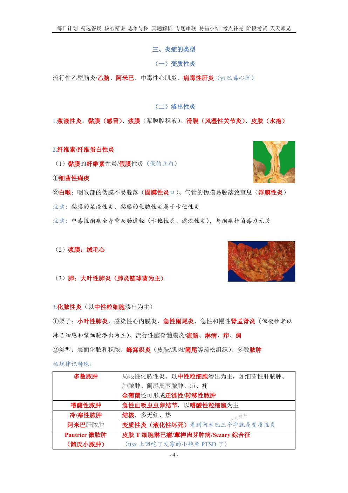
📷 讲义原图 · 第25讲 · 第4页
网站题W2第25讲 · 第4页
渗出性炎
答案与出处
答案：BDFGIJKLNOPQSTUVWZ②
📖 第25讲 · 第4页
网站题W3第25讲 · 第5页
增生性炎
答案与出处
答案：MRX①
📖 第25讲 · 第5页
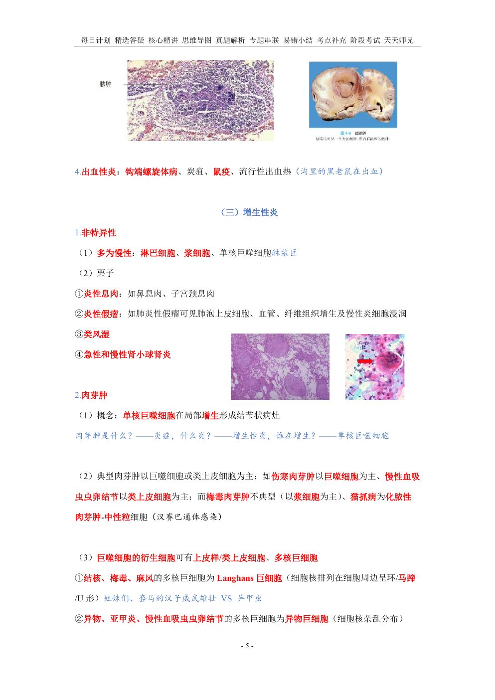
📷 讲义原图 · 第25讲 · 第5页
网站题W4第25讲 · 第4页
浆液性炎
答案与出处
网站题W5第25讲 · 第4页
纤维素性炎
答案与出处
网站题W6第25讲 · 第4页
化脓性炎
答案与出处
网站题W7第25讲 · 第5页
出血性炎
答案与出处
多核巨细胞B型题
A 结核
B 异物
C 梅毒
D 亚急性甲状腺炎
E 麻风
F 慢性血吸虫虫卵
G 细胞核排列在细胞周边呈环/马蹄/U形
网站题W8第25讲 · 第5页
Langhans巨细胞
答案与出处
网站题W9第25讲 · 第5页
异物巨细胞
答案与出处
炎症介质的作用B型题
A C5a
B TNF
C C3a
D LTB4
E PG
F 细菌产物
G P物质
H IL-8
I 组胺
J IL-1
K 缓激肽
L 白细胞溶酶体酶
M NO
N 白细胞介素10（IL-10）
O 脂质素
P 活性氧
Q 转化生长因子（TGF-β）
网站题W10第25讲 · 第7页
血管扩张
答案与出处
答案：ACEGIKM
📖 第25讲 · 第7页
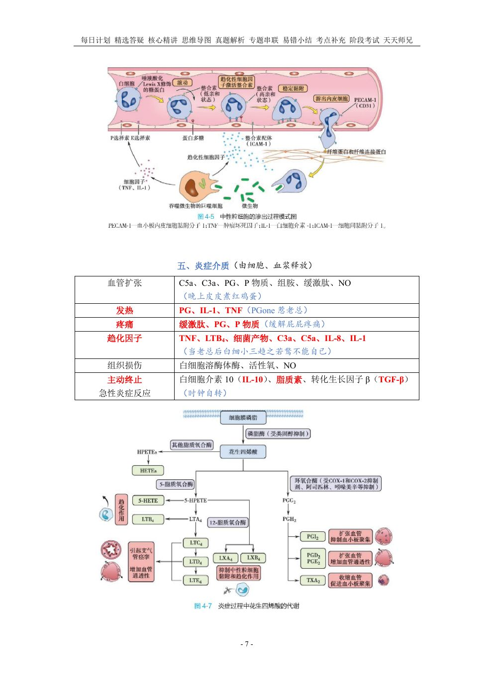
📷 讲义原图 · 第25讲 · 第7页
网站题W11第25讲 · 第7页
发热
答案与出处
网站题W12第25讲 · 第7页
疼痛
答案与出处
网站题W13第25讲 · 第7页
趋化因子
答案与出处
网站题W14第25讲 · 第7页
组织损伤
答案与出处
网站题W15第25讲 · 第7页
主动终止急性炎症反应
答案与出处
常考肉芽肿B型题
A IV型变态反应
B 干酪样坏死（无结构嗜酸性颗粒物），内源性复发，多钙化
C 非感染肉芽肿
D 最多见于风湿性心肌炎的心肌间质小血管旁，不见于皮肤环形红斑
E 类上皮细胞、Langhans巨细胞、淋巴细胞、成纤维细胞
F 急性肉芽肿
G 吞噬纤维素样坏死物的巨噬细胞，核呈毛虫/枭眼状
H 回肠末端淋巴小结多见，圆形/椭圆形溃疡，其长轴与肠长轴平行，不引起肠梗阻
I 树胶肿/梅毒瘤
J 伤寒细胞是吞噬伤寒杆菌、红细胞、细胞碎片的巨噬细胞
M 大量浆细胞（特征）和淋巴细胞，少量类上皮和Langhans巨细胞
N 凝固性坏死（可见原有血管壁轮廓），极少钙化
O 大量类上皮细胞，少量异物巨细胞、淋巴、成纤维细胞
P 假结核结节、毛蚴死亡、多钙化
网站题W16第25讲 · 第12页
结核
答案与出处
答案：ABE
📖 第25讲 · 第12页
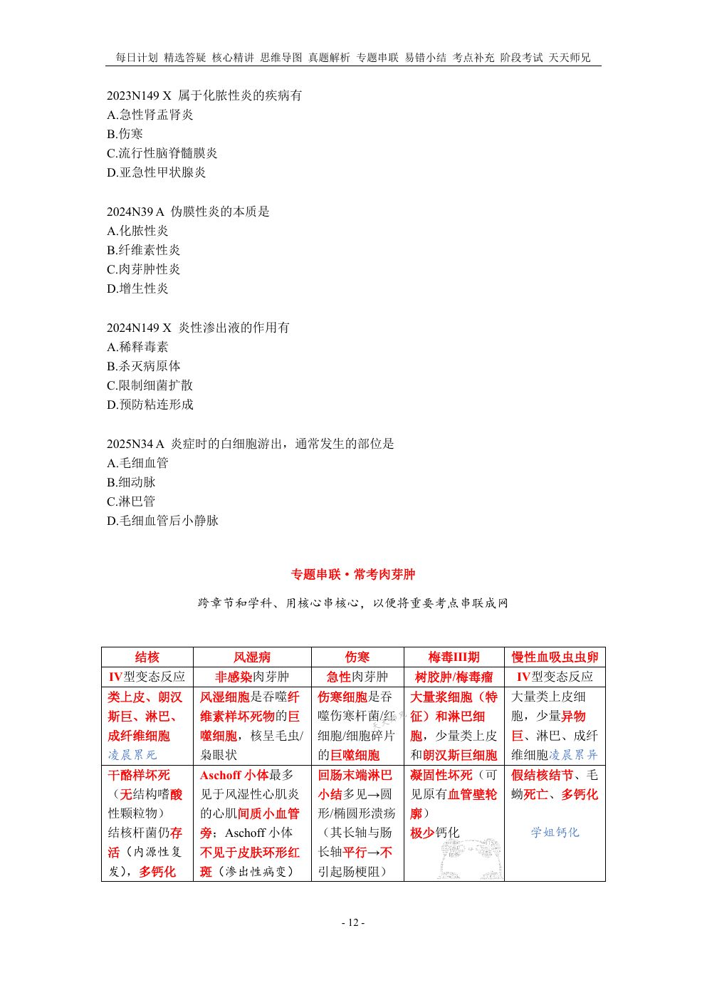
📷 讲义原图 · 第25讲 · 第12页
网站题W17第25讲 · 第12页
风湿病
答案与出处
网站题W18第25讲 · 第12页
伤寒
答案与出处
网站题W19第25讲 · 第12页
梅毒III期
答案与出处
网站题W20第25讲 · 第12页
慢性血吸虫虫卵
答案与出处
【单选题】炎症过程中介导白细胞滚动的主要是单项选择教师补充
网站题W21第25讲 · 第6页
【单选题】炎症过程中介导白细胞滚动的主要是
答案与出处
答案：A
📖 第25讲 · 第6页
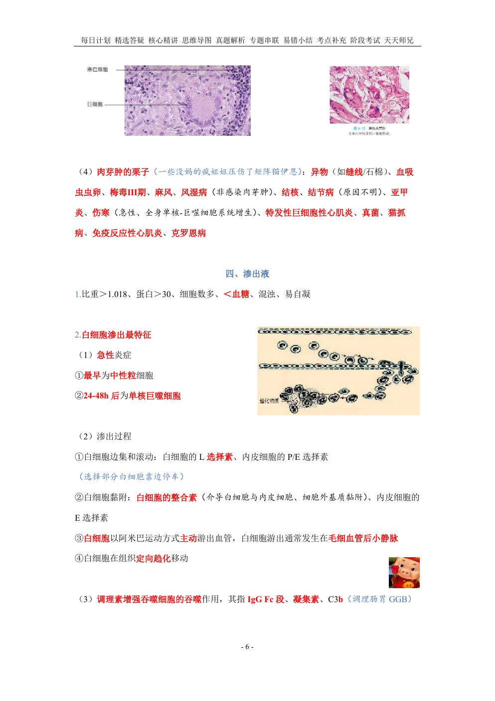
📷 讲义原图 · 第25讲 · 第6页
【单选题】中性粒细胞最有效的杀菌系统是单项选择教师补充
A H2O2-MPO-卤素
B 超氧阴离子-H2O2-羟自由基
C 乳铁蛋白-溶菌酶-弹性蛋白酶
D 酸性环境-防御素-一氧化氮
网站题W22第25讲 · 第3页
【单选题】中性粒细胞最有效的杀菌系统是
答案与出处
答案：A
📖 第25讲 · 第3页
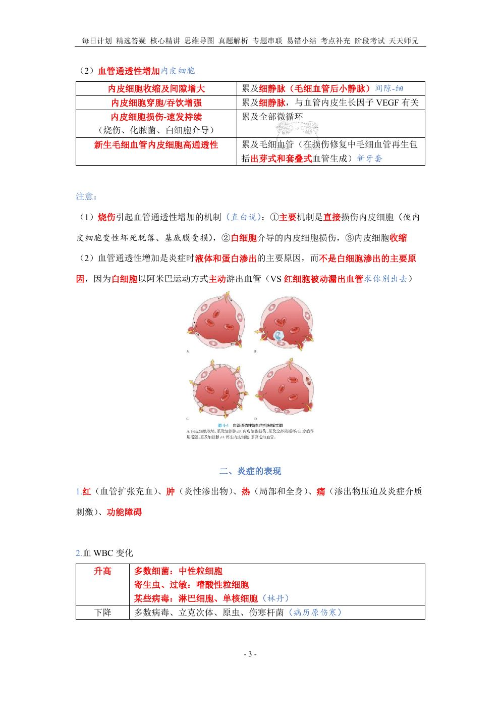
📷 讲义原图 · 第25讲 · 第3页
【多选题】由细胞释放,主要引起疼痛的炎症介质有多项选择教师补充
网站题W23第25讲 · 第7页
【多选题】由细胞释放,主要引起疼痛的炎症介质有
答案与出处
【多选题】巨噬细胞在炎症中的主要功能有多项选择教师补充
A 有吞噬作用,参与微生物和坏死组织的清除
B 为B细胞提呈抗原,参与免疫反应
C 分泌细胞因子,参与炎症的蔓延和终止
D 启动组织修复,参与瘢痕形成
网站题W24第25讲 · 第5页
【多选题】巨噬细胞在炎症中的主要功能有
答案与出处
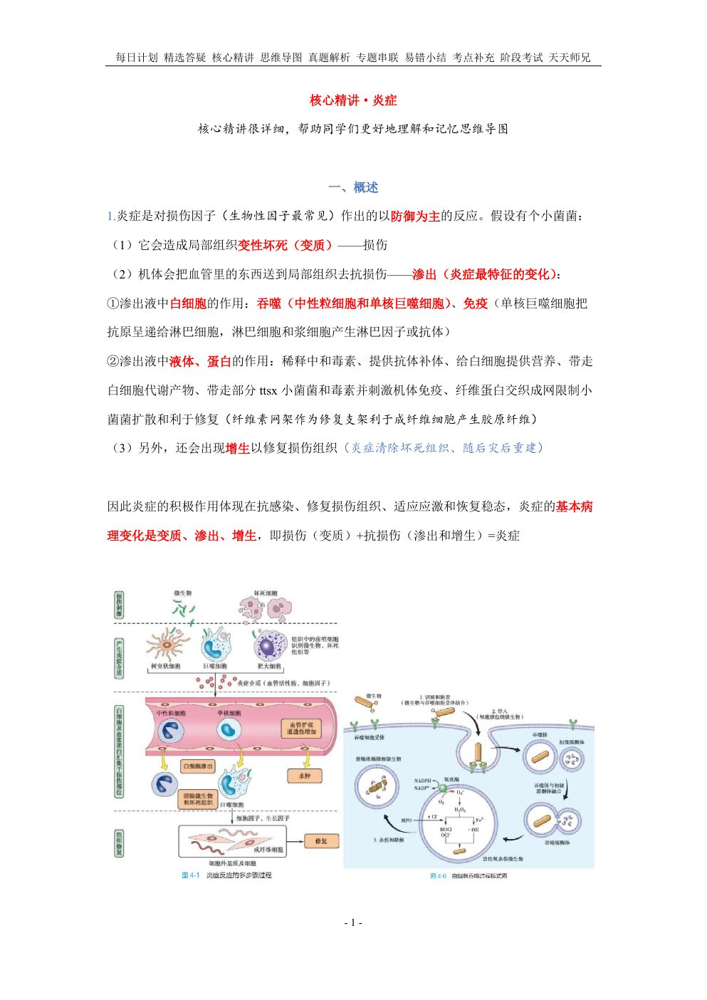
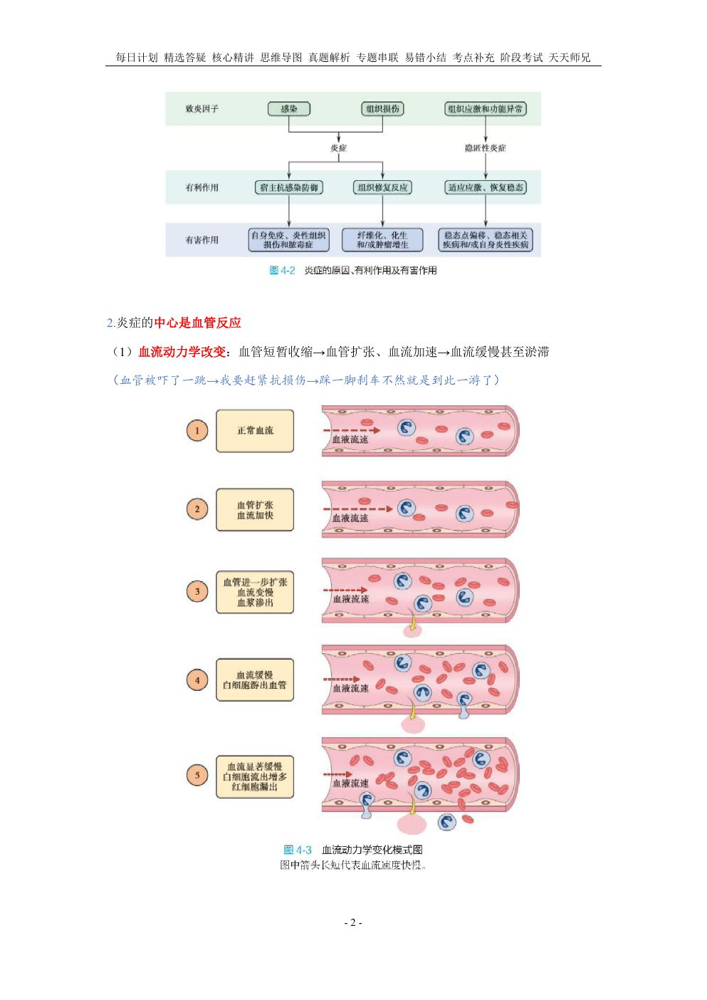
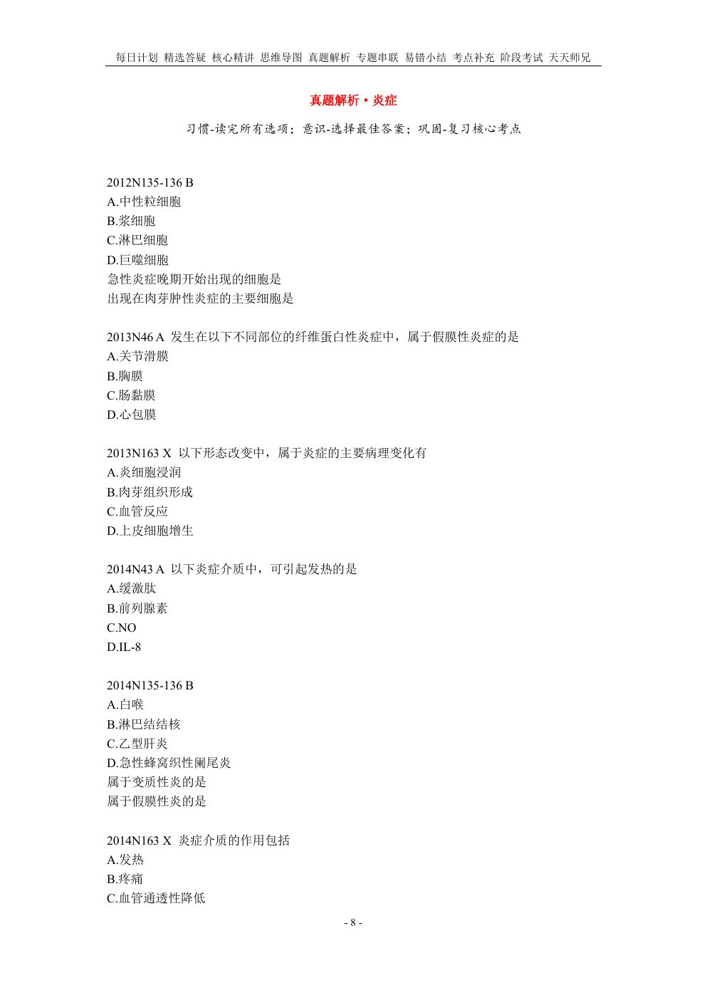
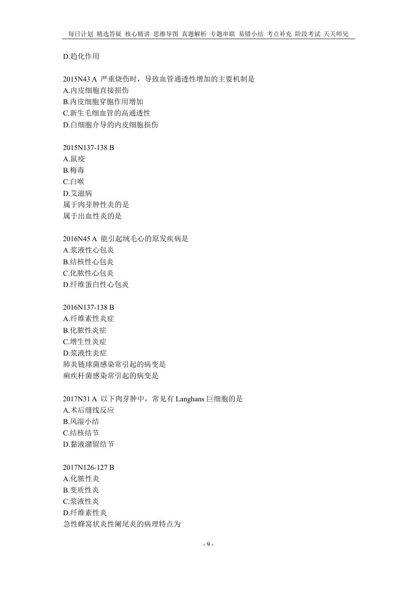
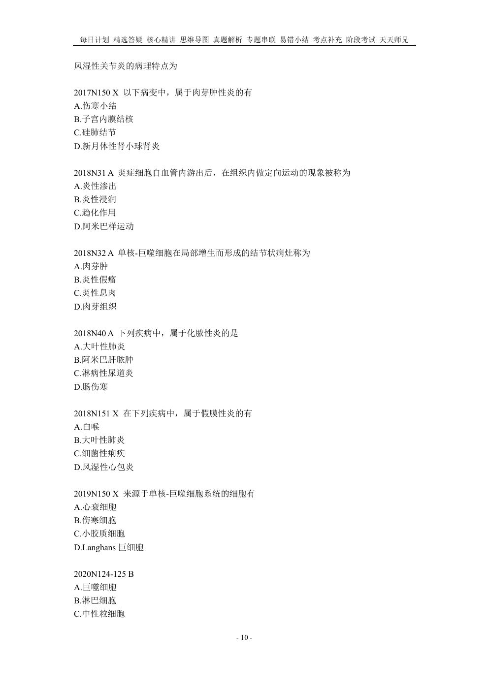
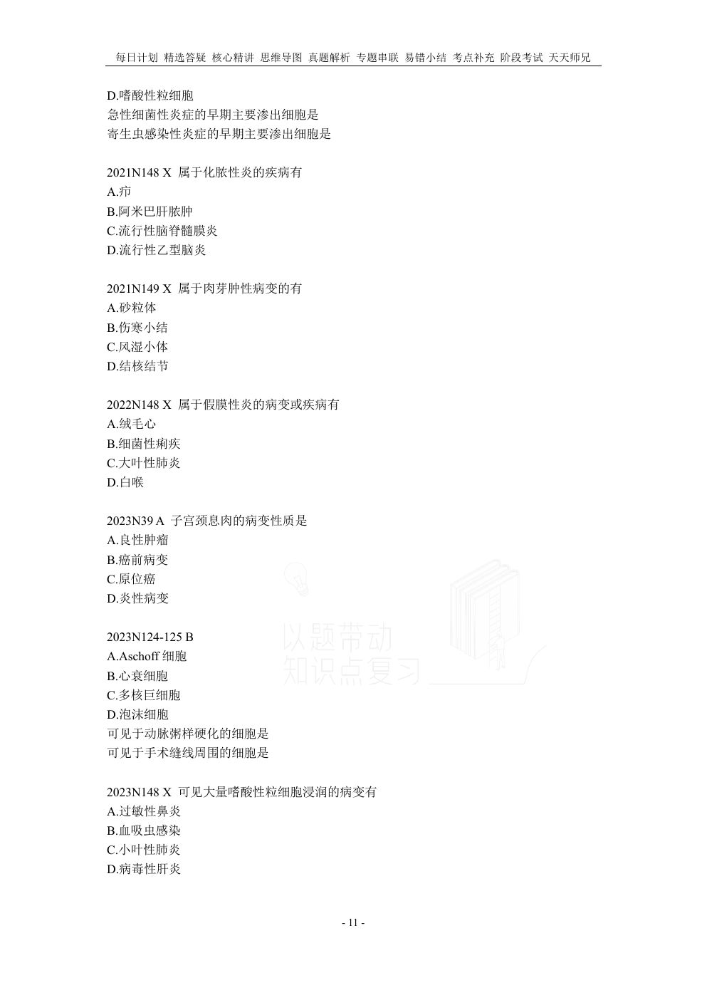
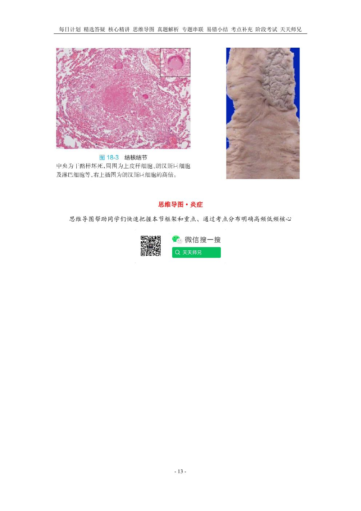